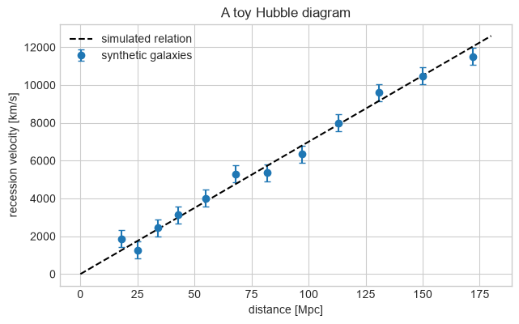
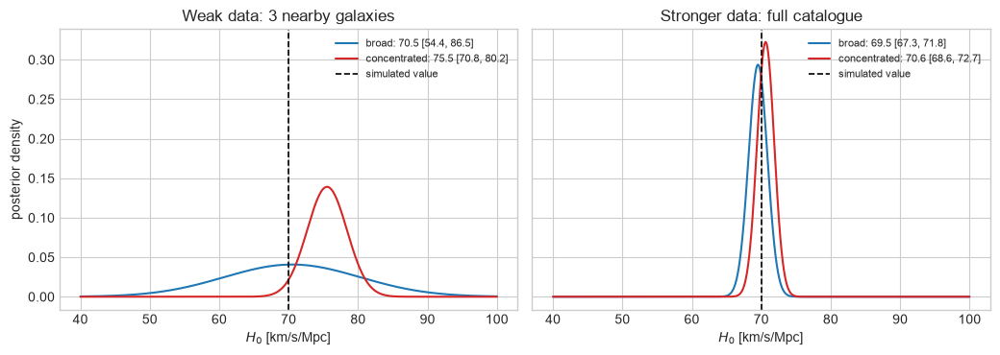
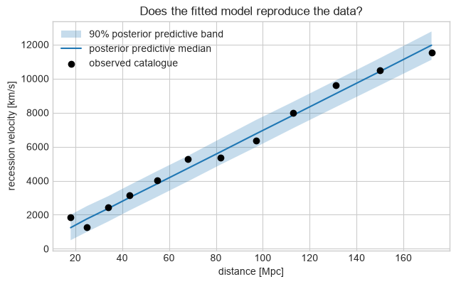

Extension lab: a small Hubble-law inference#
FQCP 2026 · Prior sensitivity outside gravitational-wave astronomy
This optional notebook uses a synthetic nearby-galaxy catalogue to answer one question: when does the prior visibly affect the posterior? Everything is computed on a one-dimensional grid, so the statistical idea is not hidden by a sampler.
Teaching boundary
This is not a measurement of the Hubble constant. Real analyses must build and calibrate a distance ladder, model distance and redshift uncertainties, peculiar velocities, selection effects, and population structure. Here the distances are treated as exact and every galaxy has the same known velocity scatter.
1. From a science question to a model#
At low redshift, the Hubble law is approximately
where \(d_i\) is distance in Mpc, \(v_i\) is recession velocity in km/s, and \(H_0\) has units km/s/Mpc. We use
as a deliberately simple model for measurement noise and galaxy-to-galaxy peculiar motion.
Bayesian piece |
In this notebook |
|---|---|
parameter |
\(H_0\) |
data |
synthetic \((d_i,v_i)\) pairs |
likelihood |
independent Gaussian velocity residuals |
prior |
either broad or concentrated above the simulated value |
check |
do posterior predictions cover the observed velocities? |
import numpy as np
import matplotlib.pyplot as plt
rng = np.random.default_rng(20260905)
plt.style.use("seaborn-v0_8-whitegrid")
H0_SIMULATED = 70.0 # km/s/Mpc
SIGMA_V = 450.0 # km/s; deliberately large enough to make the small sample weak
distance = np.array([18, 25, 34, 43, 55, 68, 82, 97, 113, 131, 150, 172.0])
velocity = H0_SIMULATED * distance + rng.normal(0, SIGMA_V, distance.size)
fig, ax = plt.subplots(figsize=(7.2, 4.2))
ax.errorbar(
distance,
velocity,
yerr=SIGMA_V,
fmt="o",
capsize=3,
label="synthetic galaxies",
)
distance_line = np.linspace(0, 180, 200)
ax.plot(
distance_line,
H0_SIMULATED * distance_line,
"k--",
label="simulated relation",
)
ax.set(
xlabel="distance [Mpc]",
ylabel="recession velocity [km/s]",
title="A toy Hubble diagram",
)
ax.legend()
plt.show()

2. Likelihood, two priors, one posterior grid#
We compare:
a broad uniform prior on \(40\leq H_0\leq100\);
a concentrated Gaussian prior centred at \(76\) with width \(3\) km/s/Mpc.
The second prior is intentionally offset from the simulated value. These are teaching choices, not summaries of any real \(H_0\) measurement.
h0_grid = np.linspace(40.0, 100.0, 2001)
broad_prior = np.ones_like(h0_grid)
concentrated_prior = np.exp(-0.5 * ((h0_grid - 76.0) / 3.0) ** 2)
def normalise(density):
return density / np.trapezoid(density, h0_grid)
broad_prior = normalise(broad_prior)
concentrated_prior = normalise(concentrated_prior)
def posterior_for(sample_size, prior):
selected_distance = distance[:sample_size]
selected_velocity = velocity[:sample_size]
residual = selected_velocity[:, None] - selected_distance[:, None] * h0_grid
log_likelihood = -0.5 * np.sum(
(residual / SIGMA_V) ** 2 + np.log(2 * np.pi * SIGMA_V**2), axis=0
)
unnormalised = np.exp(log_likelihood - log_likelihood.max()) * prior
return normalise(unnormalised)
def quantiles(density, probabilities=(0.05, 0.5, 0.95)):
increments = 0.5 * (density[:-1] + density[1:]) * np.diff(h0_grid)
cdf = np.r_[0.0, np.cumsum(increments)]
cdf /= cdf[-1]
return np.interp(probabilities, cdf, h0_grid)
posteriors = {
(3, "broad"): posterior_for(3, broad_prior),
(3, "concentrated"): posterior_for(3, concentrated_prior),
(distance.size, "broad"): posterior_for(distance.size, broad_prior),
(distance.size, "concentrated"): posterior_for(
distance.size, concentrated_prior
),
}
Predict before plotting: in which panel should the two posterior curves differ more: three nearby galaxies or the full catalogue?
fig, axes = plt.subplots(1, 2, figsize=(10.5, 3.8), sharey=True)
for ax, sample_size, title in [
(axes[0], 3, "Weak data: 3 nearby galaxies"),
(axes[1], distance.size, "Stronger data: full catalogue"),
]:
for prior_name, color in [("broad", "C0"), ("concentrated", "C3")]:
density = posteriors[(sample_size, prior_name)]
lower, median, upper = quantiles(density)
ax.plot(
h0_grid,
density,
color=color,
label=f"{prior_name}: {median:.1f} [{lower:.1f}, {upper:.1f}]",
)
ax.axvline(H0_SIMULATED, color="k", ls="--", lw=1.2, label="simulated value")
ax.set(xlabel=r"$H_0$ [km/s/Mpc]", title=title)
ax.legend(fontsize=8)
axes[0].set_ylabel("posterior density")
fig.tight_layout()
plt.show()
for sample_size in (3, distance.size):
print(f"Using {sample_size} galaxies")
for prior_name in ("broad", "concentrated"):
lower, median, upper = quantiles(posteriors[(sample_size, prior_name)])
print(
f" {prior_name:12s}: median {median:5.1f}; "
f"90% interval [{lower:5.1f}, {upper:5.1f}]"
)

Using 3 galaxies
broad : median 70.5; 90% interval [ 54.4, 86.5]
concentrated: median 75.5; 90% interval [ 70.8, 80.2]
Using 12 galaxies
broad : median 69.5; 90% interval [ 67.3, 71.8]
concentrated: median 70.6; 90% interval [ 68.6, 72.7]
The weak-data posteriors retain visibly different information from the two priors. With the full catalogue the likelihood is narrower, so the same prior disagreement matters less—but it need not disappear completely.
That is the useful prior-sensitivity question: would a scientifically plausible change of prior alter the conclusion at the information level of the actual data? Showing several priors is a diagnostic; choosing only the broadest one is not automatically more objective.
3. Check the model in data space#
A narrow posterior is not enough. We draw posterior values of \(H_0\), simulate new velocities with the assumed scatter, and compare their 90% predictive band with the catalogue.
full_posterior = posteriors[(distance.size, "broad")]
h0_draws = rng.choice(h0_grid, size=3000, p=full_posterior / full_posterior.sum())
replicated_velocity = (
h0_draws[:, None] * distance[None, :]
+ rng.normal(0, SIGMA_V, size=(h0_draws.size, distance.size))
)
predictive_lower, predictive_median, predictive_upper = np.quantile(
replicated_velocity, [0.05, 0.5, 0.95], axis=0
)
fig, ax = plt.subplots(figsize=(7.2, 4.2))
ax.fill_between(
distance,
predictive_lower,
predictive_upper,
alpha=0.25,
label="90% posterior predictive band",
)
ax.plot(distance, predictive_median, label="posterior predictive median")
ax.scatter(distance, velocity, color="k", zorder=3, label="observed catalogue")
ax.set(
xlabel="distance [Mpc]",
ylabel="recession velocity [km/s]",
title="Does the fitted model reproduce the data?",
)
ax.legend()
plt.show()
inside = np.mean((velocity >= predictive_lower) & (velocity <= predictive_upper))
print(f"Observed points inside the pointwise 90% predictive band: {inside:.0%}")

Observed points inside the pointwise 90% predictive band: 100%
This plot checks the simplified model against the type of data it claims to generate. With only 12 fitted points, the fraction inside a pointwise 90% band need not equal exactly 90%; this is a visual model check, not a coverage study. It does not validate the omitted distance ladder or turn the toy calculation into a cosmological result.
4. Your turn: make the data less informative#
Increase SIGMA_V from 450 to 900 km/s and rerun Sections 1–3.
Do the 90% intervals widen?
Does the difference between priors grow or shrink?
Does collecting more galaxies still help when each one is noisier?
# Change one assumption, then rerun the posterior cells above.
trial_sigma_v = 900.0
print("Trial scatter:", trial_sigma_v, "km/s")
Trial scatter: 900.0 km/s
Hint
The likelihood function currently reads the global SIGMA_V. Either change
that value and rerun, or add sigma_v as an argument to posterior_for.
Keep the catalogue fixed so that you change only the assumed information per
galaxy.
Takeaways#
A posterior combines prior and likelihood; it does not erase the prior by definition.
Prior sensitivity is strongest when the likelihood is weak or when the prior is concentrated near a competing value.
More informative data usually reduce reasonable prior sensitivity, but that is something to demonstrate, not assume.
Posterior predictive checks ask whether the fitted model can reproduce data; they test a different question from posterior width.
A transparent toy can teach the workflow, but its posterior is not a scientific measurement of \(H_0\).
Read or try next#
Gelman et al., Bayesian Workflow gives the broader model-building, checking, and revision cycle.
Simpson et al., Penalising Model Component Complexity develops a principled route to weakly informative priors.
Bayesian Data Analysis, especially Chapters 5 and 6, develops hierarchical models and predictive checking beyond this one-parameter example.
Next: